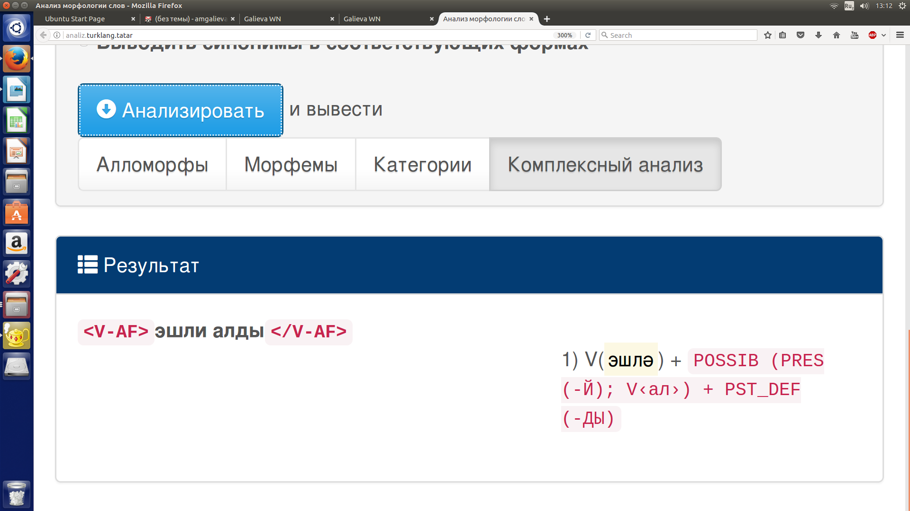
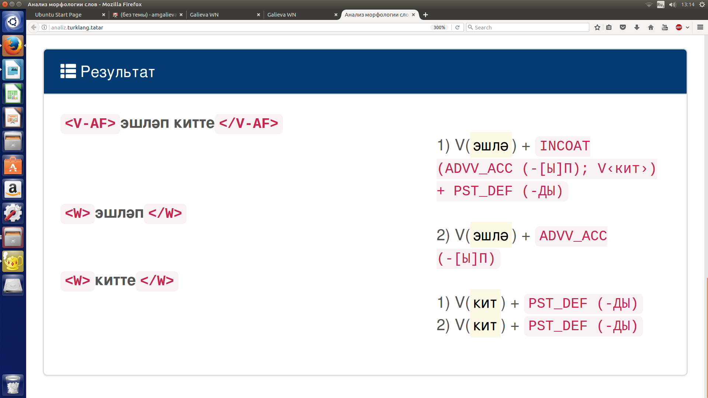

class: center, middle Tatarstan Academy of Sciences ##Development of annotation system for multiword constructions for Tatar National Corpus ###Ayrat Gatiatullin, **Alfiya Galieva,** Dzhavdet Suleymanov (amgalieva@gmail.com) --- ##Outline Introduction General information on Tatar National Corpus Basic classes of Tatar analytical verb constructions Constructions containing auxiliary verbs of different types Examples of analyzing Conclusion References --- ## Introduction Quantitative and qualitative parameters of a corpus predetermine its applicability for various tasks and its user-friendliness. We present an approach to develop the system of corpus annotation of Tatar multiword constructions on example of analytical verb constructions. What is done? * preliminary inventory of Tatar multiword verb forms / constructions is compiled, * basic types of them are distinguished, * rules for extracting them are built, * the system for tagging these constructions is developed (http://analiz.turklang.tatar/) --- ###'Tugan Tel' Tatar National Corpus (http:// http://tugantel.tatar/) - is designed by a team of computational linguists from Research Institute of Applied Semiotics of Tatar Academy of Sciences (www.ips.antat.ru); - is grammatically annotated; - now consists of written (mainly prosaic) texts; - the estimated size is 118 million words; - has a user-friendly interface and is accessed via Internet by any web browser. --- ##Grammatical annotation in TatNC Two main fields for the morphological information about a Tatar word-form: - part of speech characteristics of the stem; - set of morphological characteristics for each part of speech tag. The two-level morphological analyzer based on PC-KIMMO software is used. The system of grammatical annotation is based on Leipzig Glossing Rules (a number of tags, specific for the Tatar language, is added). --- ##The main page of the TatNC  --- ### Multiword constructions in Tatar Tatar corpus enables us to retrieve an exhaustive list of such items and to build their models. We built special rules for retrieving such units on - the structure of the components, - the order of components, - the possibility to insert some outer members. --- ###Basic classes of Tatar analytical verb constructions We distinguish 3 basic classes of Tatar analytical verb constructions - analytical **tenses** and **moods** (analytical verb forms): - analytical **aspect forms**; - analytical **modal constructions**. --- ### Constructions containing auxiliary verbs of different types (1) 1.Auxiliary verb is **defective verb** Morphological form || Translation || Morphological category ||Tag :---------------------:||:---------------:||:------------------------:||:---------------------:||:---------------------- bargan ide ||[he] had gone ||Pluperfect ||PL_PERF barsa ide ||[he] would go || Optative ||OPT barsa ikän ||[he] would go || Optative ||OPT - analytical **tenses** and **moods** (analytical verb forms) --- ### Constructions containing auxiliary verbs of different types (2) 2.Auxiliary verb is **modifying verb** Morphological form || Translation || Morphological category ||Tag :---------------------:||:---------------:||:------------------------:||:---------------------:||:---------------------- eșläp aldı ||[he] had been working ||Momentative ||MOMENT nacarlana bara ||[he] continues to deteriorate||Continuative ||CONTIN eșläp kitte ||[he] started to work ||Inchoative || INCHOAT - analytical aspect forms --- ### Constructions containing auxiliary verbs of different types (3) 3.Auxiliary verb is **modal verb** Morphological form || Translation || Morphological category ||Tag :---------------------:||:---------------:||:------------------------:||:---------------------:||:---------------------- eșlise kilä ||[he] wants to work ||Desiderative ||DESID eșli ala ||[he] can work ||Possibilitive ||POSSIB eșlärgä yöri ||[he] is going to work ||Prospective ||PROSP - analytical modal constructions. The Tatar language has no analogues of the IE basic modal verbs, and modal constructions are formed by means of notional verbs: *kilü* ‘to come’ - want *alu* ‘to take’ - can / may *bulu* ‘to be’ - can, etc. --- ### Examples of tagging grammatical verbal forms Morphological category || Structure ||Example || Translation ||Tag :---------------------:||:---------------:||:-------------- ---:||:---------------------:||:---------------------- Future-in-the-Past ||V+PCP_FUT(AcAK) +V_aux(ide)||baracak ide ||‘should go’ || FUTURE-PAST Pluperfect ||V+PCP_PS(-GAn) +V_aux(ide) ||bargan ide ||'had gone' ||Pl_PERF Optative ||V+COND(sA) +V_aux(иде) ||barsa ide ||‘would go’ ||OPT - analytical tenses and moods (analytical verb forms): --- Examples of Tatar compound verbs derived from the verb *eşläw* ‘to work, to do’ Construction || Translation ||Structure || Morphological category ||Tag :---------------------:||:---------------:||:------------------------:||:-----------------------:||:---------------------- eșläp aldı ||had been working ||V+CONV(-ıp) V_aux(take)||Momentative ||MOMENT eșli bara ||сcontinues to work||V+PRES(-A) V_aux(go) ||Continuative ||CONTIN eșläp kitte ||started to work ||V+CONV(-ıp) V_aux(go away)||Inchoative ||INCHOAT eșläp taşladı ||have worked ||V+CONV(ıIp) V_aux(throw)||Momentative ||MOMENT eșli yazdı ||nearly worked ||V+PRES (-A) V_aux(‘nearly do sth.’)||Conative ||CONAT eșlise kaldı ||left to do ||V+DESID(-Ası) V_aux(stay) ||Proximative||PROX --- ###Multiword constructions extracting An example of a complex query <img src="pic_comlexqu.png" alt="Picture 1" width=90%> --- ###Extracting multiword constructions Extracting multiword constructions requires a description of parameters of two or even more linguistic units with a predetermined distance between them. * Such queries become cumbersome and time-consuming; * The user has to be experienced in making complex queries. --- ###The extended version of Morphological Analyser http://analiz.turklang.tatar/ --- ###An example of analysing (1) *эшли алды* ‘[he] could do, [he] was able to do’  --- ###An example of analyzing ambiguous constructions *эшләп китте* 1. ‘[he] started to work’ 2. ‘[he] has done and left’  --- ### Conclusions and Future Work So the grammatical annotation system for Tatar National Corpus is being enriched by entering new tags for compound (analytical) verb forms and constructions, the developed system will be integrated into the Corpus in the near future. The annotation system is mainly built on the tags of - Leipzig Glossing rules (https://www.eva.mpg.de/lingua/pdf/Glossing-Rules.pdf); - the database of verbs developed by V. Plungian (httlp://www.mccme.ru/ling/verbum.htm/). We distinguished and marked up analytical verb forms of two types: 1) analytical verb tenses 2) analytical constructions containing phase and modal verbs. --- ###Future work Extending the system with analyzing - constructions containing postpositions; - izafe constructions. --- ##References Adalı K., Dinc T., Gokırmak M, Eryigit G. (2016). Comprehensive Annotation of Multiword Expressions Turkish. // TurCLing 2016. Pp. 60-66. Ivan A. Sag, Timothy Baldwin, Francis Bond, Ann Copestake and Dan Flickinger: Multiword Expressions: A Pain in the Neck for NLP (2002) in: LECTURE NOTES IN COMPUTER SCIENCE, Vol. 2276, pp. 1-15. Mersinli Ü., Aksan Y. (2016). A Methodological Consideration for Multi-word Unit Extraction in Turkish. // TurCLing 2016. Pp. 27-31. Oflazer, K., & Say, B. (2004, July). Integrating morphology with multi-word expression processing in Turkish // Proceedings of the Workshop on Multiword Expressions: Integrating Processing (pp. 64-71). Association for Computational Linguistics. Suleymanov D., Nevzorova O., Gatiatullin A., Gilmullin R., Khakimov B. (2013). National corpus of the Tatar language “Tugan Tel”: Grammatical Annotation and Implementation // Procedia — Social and Behavioral Sciences 2013. Pp. 68-74. Tatar National Corpus. URL: http://tugantel.tatar Verbum. URL: httlp://www.mccme.ru/ling/verbum.htm --- #Thank you!